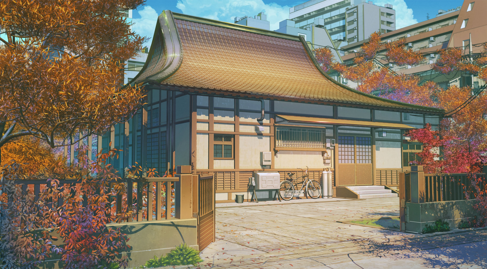

前端
01
从零实现一个 Vue3 响应式系统
手写 reactive/effect，理解依赖收集与触发更新的全过程。
2026-06-20
1.2k

// 前端 · AI · 工程笔记 — 精确、冷静、可被理解。
POSTS / 2026
手写 reactive/effect，理解依赖收集与触发更新的全过程。
17 种强调色、15 种字号是怎么失控的，以及如何用三层令牌收敛。
订阅 store、动态 import 样式、localStorage 持久化的取舍。
理性不是冷漠，是把注意力留给可被理解的事物。
从 fetch 流到逐字渲染，处理中断、错误与 markdown 增量。
编辑器、终端、效率与一点点仪式感。